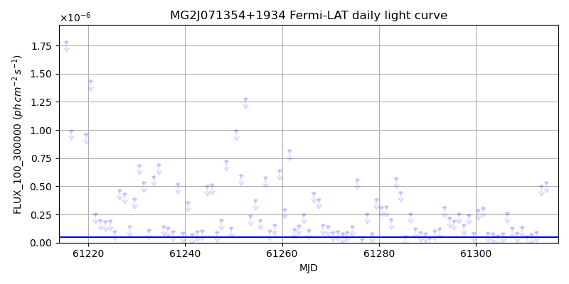
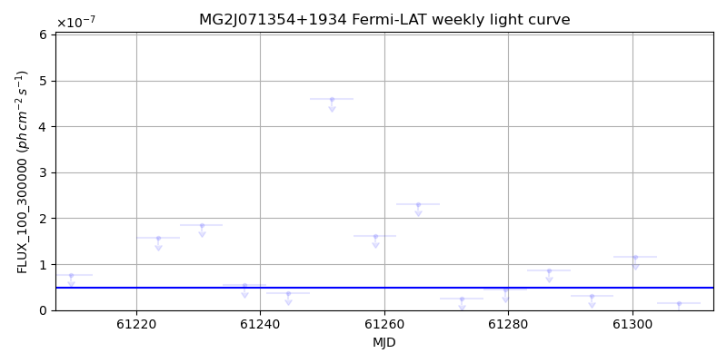
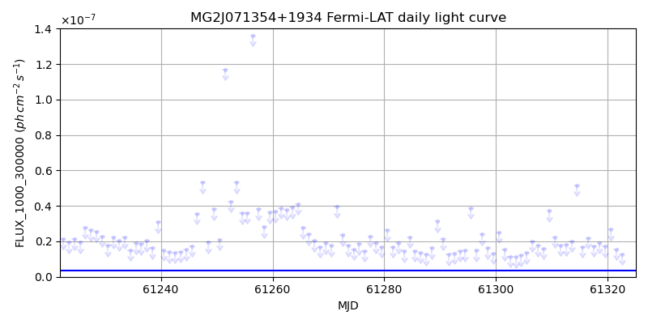
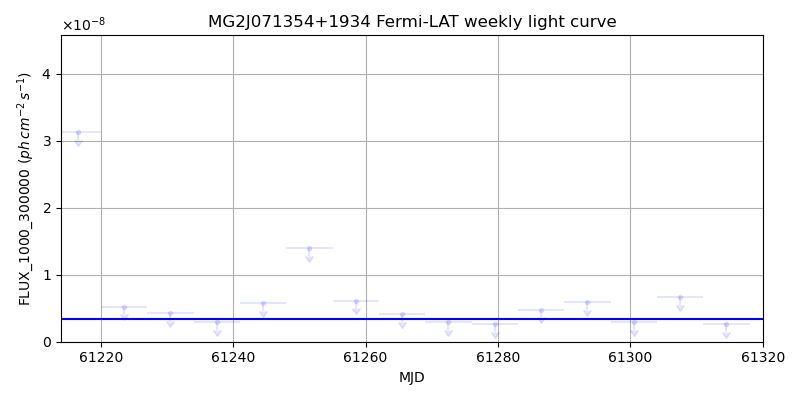

LAT Lightcurve site: https://fermi.gsfc.nasa.gov/ssc/data/access/lat/msl_lc/source/MG2_J071354p1934
NED: Query
Time of last update of this page: UT: 2026-10-10 15:18 (MJD: 61323.638)
| Property | Value |
|---|---|
| R.A. | 7:13:55.68 |
| Dec. | 19:34:58.8 |
| z | 0.540 |
| 3FGL SpectrumType | LogParabola |
| 3FGL PL Index | |
| 3FGL Flux_100_300000 | 4.96e-08 1 / (s cm2) |
| 3FGL Flux_1000_300000 | 3.41e-09 1 / (s cm2) |
| 3FGL Flux >200 GeV | 8.62e-13 1 / (s cm2) |
| 3FGL Extrap. Crab >200 GeV | 0.00 |
| 3FGL Flux After EBL Absorption >200GeV | 1.34e-13 1 / (s cm2) |
| 3FGL EBL Crab Fraction >200GeV | 0.00 |

| MJD | dMJD | Flux | dFlux | Frac3FGL | FracCrab>200GeV | EBLFracCrab>200GeV |
|---|---|---|---|---|---|---|
| 61318.50 | 0.50 | 7.60e-08 | 0.00e+00 | 0.00 | 0.00 | 0.00 |
| 61319.50 | 0.50 | 3.29e-07 | 0.00e+00 | 0.00 | 0.00 | 0.00 |
| 61320.50 | 0.50 | 1.76e-07 | 0.00e+00 | 0.00 | 0.00 | 0.00 |
| 61321.50 | 0.50 | 6.27e-08 | 0.00e+00 | 0.00 | 0.00 | 0.00 |
| 61322.50 | 0.50 | 4.46e-08 | 0.00e+00 | 0.00 | 0.00 | 0.00 |

| MJD | dMJD | Flux | dFlux | Frac3FGL | FracCrab>200GeV | EBLFracCrab>200GeV |
|---|---|---|---|---|---|---|
| 61286.50 | 3.50 | 8.67e-08 | 0.00e+00 | 0.00 | 0.00 | 0.00 |
| 61293.50 | 3.50 | 3.16e-08 | 0.00e+00 | 0.00 | 0.00 | 0.00 |
| 61300.50 | 3.50 | 1.15e-07 | 0.00e+00 | 0.00 | 0.00 | 0.00 |
| 61307.50 | 3.50 | 1.54e-08 | 0.00e+00 | 0.00 | 0.00 | 0.00 |
| 61314.50 | 3.50 | 1.48e-07 | 0.00e+00 | 0.00 | 0.00 | 0.00 |

| MJD | dMJD | Flux | dFlux | Frac3FGL | FracCrab>200GeV | EBLFracCrab>200GeV |
|---|---|---|---|---|---|---|
| 61318.50 | 0.50 | 1.92e-08 | 0.00e+00 | 0.00 | 0.00 | 0.00 |
| 61319.50 | 0.50 | 1.73e-08 | 0.00e+00 | 0.00 | 0.00 | 0.00 |
| 61320.50 | 0.50 | 2.69e-08 | 0.00e+00 | 0.00 | 0.00 | 0.00 |
| 61321.50 | 0.50 | 1.55e-08 | 0.00e+00 | 0.00 | 0.00 | 0.00 |
| 61322.50 | 0.50 | 1.27e-08 | 0.00e+00 | 0.00 | 0.00 | 0.00 |

| MJD | dMJD | Flux | dFlux | Frac3FGL | FracCrab>200GeV | EBLFracCrab>200GeV |
|---|---|---|---|---|---|---|
| 61286.50 | 3.50 | 4.80e-09 | 0.00e+00 | 0.00 | 0.00 | 0.00 |
| 61293.50 | 3.50 | 5.88e-09 | 0.00e+00 | 0.00 | 0.00 | 0.00 |
| 61300.50 | 3.50 | 2.95e-09 | 0.00e+00 | 0.00 | 0.00 | 0.00 |
| 61307.50 | 3.50 | 6.66e-09 | 0.00e+00 | 0.00 | 0.00 | 0.00 |
| 61314.50 | 3.50 | 2.63e-09 | 0.00e+00 | 0.00 | 0.00 | 0.00 |
--------------------------------------------------------- Using user-supplied coords: 7:13:55.68 19:34:58.8 2000 --------------------------------------------------------- FLWO UT night of: 2026-10-11 Local Sid. @ Midnight: 00:55 Sunset (-15.0) (local, UT): 19:04 02:04 Sunrise (-15.0) (local, UT): 05:18 12:18 Moonrise (local, UT): Moonset (local, UT): Moon phase: 0.01 --------------------------------------------------------- AzTime LSID UT Obj_el Obj_az Mn_el Mn_az Sep. --------------------------------------------------------- 19:04 19:58 02:04 -37.7 13.0 -16.1 264.2 94.3 19:34 20:29 02:34 -35.8 21.5 -22.3 267.8 94.6 20:04 20:59 03:04 -33.1 29.4 -28.5 271.5 94.9 20:34 21:29 03:34 -29.6 36.7 -34.7 275.4 95.2 21:04 21:59 04:04 -25.5 43.2 -40.8 279.7 95.5 21:34 22:29 04:34 -20.9 49.0 -46.8 284.6 95.8 22:04 22:59 05:04 -15.8 54.3 -52.7 290.5 96.2 22:34 23:29 05:34 -10.5 59.1 -58.4 297.7 96.5 23:04 23:59 06:04 -4.1 63.4 -63.6 307.3 96.8 23:34 00:29 06:34 1.3 67.5 -68.1 320.3 97.2 00:04 00:59 07:04 7.0 71.3 -71.3 338.2 97.6 00:34 01:29 07:34 13.1 74.9 -72.6 0.4 97.9 01:04 01:59 08:04 19.3 78.4 -71.5 22.7 98.3 01:34 02:30 08:34 25.6 81.9 -68.3 40.8 98.6 02:04 03:00 09:04 32.0 85.5 -63.9 54.1 99.0 02:34 03:30 09:34 38.4 89.3 -58.7 63.8 99.3 03:04 04:00 10:04 44.8 93.3 -53.1 71.2 99.7 03:34 04:30 10:34 51.1 98.0 -47.3 77.2 100.0 04:04 05:00 11:04 57.4 103.6 -41.4 82.2 100.4 04:34 05:30 11:34 63.5 110.9 -35.3 86.6 100.7 05:04 06:00 12:04 69.3 121.3 -29.2 90.6 101.0 05:18 06:14 12:18 71.6 127.7 -26.5 92.4 101.2 --------------------------------------------------------- Dark hours >55 deg.: 1.42 srcstart (UT): 2026-10-11 10:52 srcend (UT): 2026-10-11 12:17